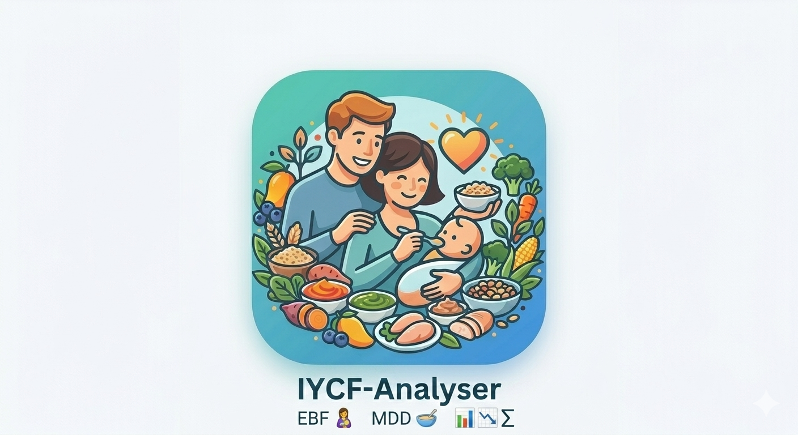

IYCF Analyse
Overview
Desktop tool for analysing IYCF survey data with validation, indicators, and reporting. The IYCF Analyse Application is a desktop tool designed to import, validate, and analyse Infant and Young Child Feeding (IYCF) survey data. It supports logic-aware validation, unweighted and weighted indicator computation, and outputs aligned with indicators for assessing infant and young child feeding Practises - Definition and measurement methods (WHO, UNICEF 2021) .
Purpose
The IYCF Analyse Application is a desktop-based tool designed to support the import, validation, analysis, and reporting of Infant and Young Child Feeding (IYCF) survey data.
This helps ensure collected data is:
- Structurally correct
- Logically consistent
- Analytically valid
- Ready for reporting and decision making
Built around standard IYCF concepts and computation logic aligned with WHO, UNICEF, Indicators for assessing infant and young child feeding Practises - Definition and measurement methods (WHO, UNICEF 2021).
How It Works
1. Data Import
- Imports IYCF data from an Excel file using a predefined template
- Requires a sheet named “IYCF”
- Ensures required columns (including Weight and Strata) are present
2. Data Validation
- Logic-aware validation (skip logic respected)
- Errors → rows excluded from analysis
- Warnings → rows included, but flagged for review
- Default values safely applied where appropriate (e.g., missing weights default to 1)
3. Indicator Computation
- Calculates key IYCF indicators by appropriate age groups
- Supports both unweighted and weighted, survey-design-aware analysis
- Automatically excludes non-applicable cases from denominators
4. Data Review
- Spreadsheet-style review of imported records
- Filter records by: All, Warnings, Invalid
- Search by ID, cluster, age, warnings, or errors
5. Reporting and Export
- Export a full analysed Excel report with tables and confidence intervals
- Dashboard-ready CSV outputs
- Data Issues Excel file with summary + detailed errors/warnings
Download
Get the latest release of IYCF Analyse.
*Tip: Check for the most recent updates in the app installed.
Step 1: Download Data Entry Template
Use the official IYCF template for children aged 0–23 months. It ensures correct structure for automatic analysis in IYCF Analyse.
⬇️ Download Excel Template
📄 Download Guidance
📊 Download Sample Completed Template
This sample is for reference only. Do not upload it for analysis.
Key Features
- Excel import & validation
- Indicator computation
- Weighted analysis
- Error & warning detection
- Export reports